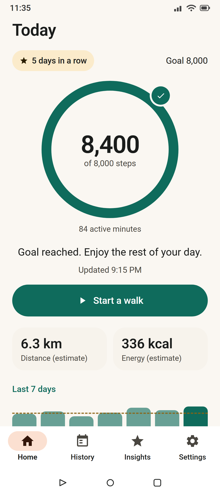
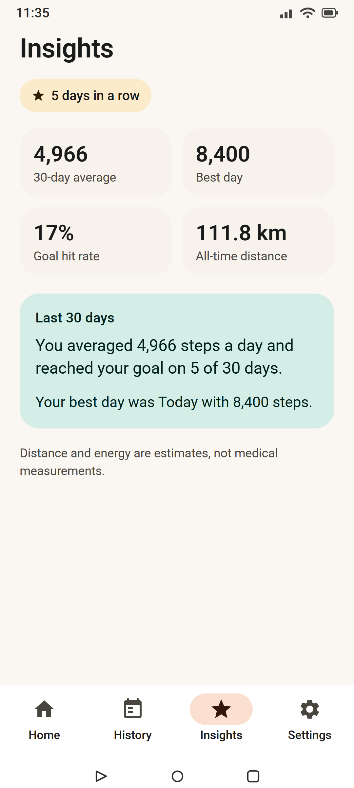
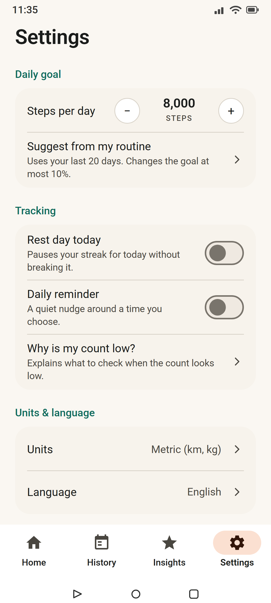
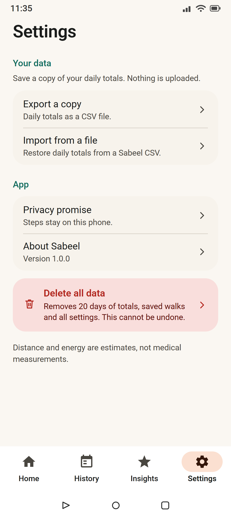
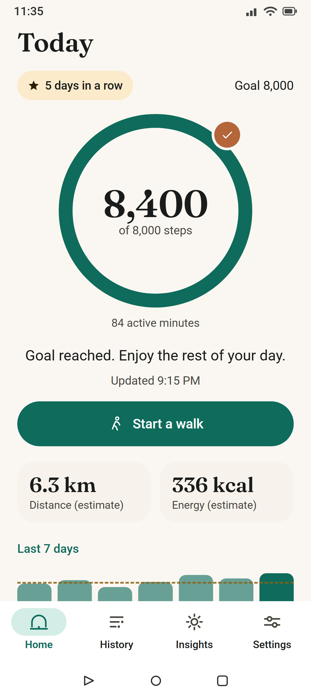
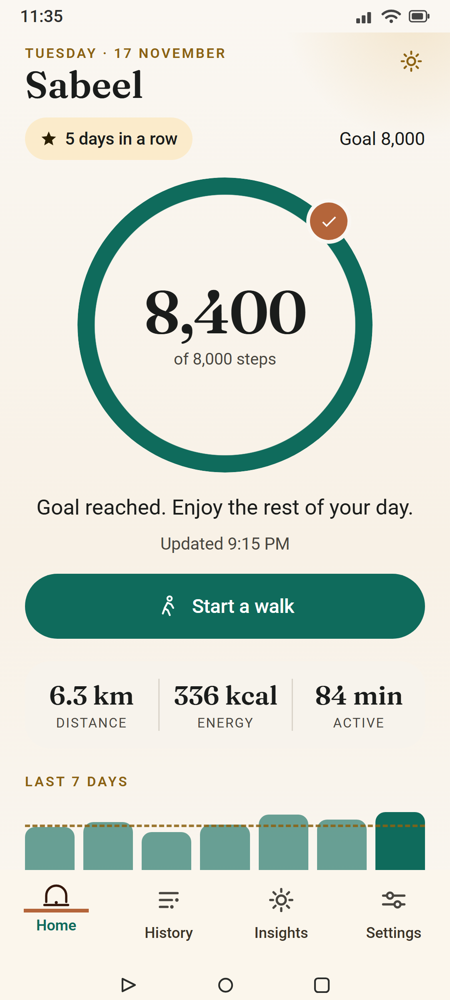

Sabeel · design prototypes · 18 November 2026
Three directions, drawn at phone size, so the decision is visual.
These are static mockups of the options that came out of the Impeccable review and the Qiyas Council. They exist to answer three questions: what to fix first, how far the design language should go, and in what order to ship. Everything is drawn at 360 × 800 dp and rendered at 3× — the same frame as the device screenshots in the review.
Method: design review prototype (no detector, native platform)Source: docs/review/2026-11-17/design-reviewCopy and values from build 0e2088a
Question 1 — which direction should get the next iteration?
Three answers. A and B are quiet — they keep the shipped visual system and repair trust and structure. C changes the design language itself. Each option shows only the screens it changes.
1 · A
Truth fix — “say only what you measured”

Home: the ring is solid, the 8,400 / of 8,000 steps pair is intact, and three metrics fit as two honest cards — 6.3 km / 336 kcal. The warning card is an emulator artifact and is not part of the design.

Insights: one window, named once. “Last 30 days”, 30-day average, “5 of 30 days” (no “days days”), all-time distance labelled as all-time.
1 · B
Structure fix — Settings, deletion, one row pattern

Top: four named groups — Daily goal, Tracking, Units & language, Body data. Every row is one pattern: title + optional sub-line + one control (stepper, switch, value + chevron).

Bottom: Your data and App are plain rows; deletion moves out of the primary button slot into an error-container “Delete all data” entry whose copy names what is removed and that it cannot be undone.
1 · C
Brand specificity — from accents to a full identity

C-lite / Q2-b: stock layout, authored details — Fraunces for the big numbers and title, custom line icons, clay completion badge, teal-tinted selected tab, a low dawn halo behind the ring.

C-full / Q2-c: the identity moves the frame — wordmark + date line, larger ring, serif status voice, tri-panel metrics with letterspaced labels, overline section headers, clay underline on the selected tab, warm paper gradient.
Question 2 — which design intent for the finish?
The same Home screen, three intensities. The question is not “pretty or plain”; it is how much of the system you are willing to maintain, translate and test.
2 · AQuiet finish
No new type, no new icons. Keep Roboto and Material components; fix layout, copy and contrast only. Cheapest to ship, no font licensing or Arabic pairing work. Reads as a well-built stock app, not a brand.
2 · BAuthored accents
One serif, a few custom icons, one accent color used with intent. Changes the feel of the numbers and the navigation without rebuilding layout. Needs a bundled font (~130 KB), an Arabic serif pairing decision, and icon files — but no screen-level redesign.
2 · CFull “Desert Dawn”
Every surface carries the identity — header, ring, status voice, metrics, section labels, tab treatment, paper background. Highest distinctiveness and highest maintenance: all screens, both languages, dark mode, large text, and every new component must follow the new rules.
Question 3 — recommended order
Phase 1 · ship-blocking
A — truth fixes
Home truncation, the 3-up row, the ring seam at 100%, and the Insights window contradiction (including the EN “days days” typo). Small, testable, and it removes the defects a reviewer would call broken. Target: re-critique ≥ 34/40, zero truncation at 1.0/1.3/1.5 font scale, no ring seam.
Phase 2 · next pass
B — structure and deletion
Unify Settings into named groups and one row pattern, move deletion into a danger zone with explicit copy, and give the 30-day chart x-axis labels. No new dependencies. Do it after A so the trust fixes are not held hostage to a Settings refactor.
Phase 3 · earned
C — brand, starting at B
Only after Phase 1 metrics hold for three working days. Take the authored-accent step (Q2-b) first: it is contained and reversible. Go full Desert Dawn (Q2-c) only if the brand-specificity test shows users can describe the app without prompting — otherwise the cost buys decoration, not recognition.
Why this order and not the reverse. The three P1 defects are trust defects: they make the app look like it is hiding what it measures. Brand work on top of a screen that says “84 min…” truncated, “5 of 30 days days”, and a seam in the ring spends design effort on a surface that still reads as unfinished. The council reached the same conclusion: trust fixes survive, Settings is downgraded to a structural pass, and brand work is suspended on a test rather than on taste.
How these were made
- Static HTML/CSS at 360 × 800 CSS px in
docs/design/prototypes/, rendered with headless Edge at --force-device-scale-factor=3 to 1080 × 2400 PNGs. The generator is build.mjs; shared tokens and components are in proto.css.
- Colors are the shipped tokens (
ui/theme/Color.kt): paper #FAF7F2, teal #0F6B5C, clay #B4653A, sand #8C6212, error #B3261E.
- Roboto is the shipped typeface. Fraunces appears only in the C prototypes as a stand-in serif; it is not in the app today. Bundling it (or any serif) is a real decision with an Arabic pairing consequence — the mockups are Latin-only.
- Copy marked as new (e.g. “Change it any time.”, “A quiet nudge around a time you choose.”) is proposal text, not strings.xml. Before shipping, every new string needs EN + AR parity, the existing 242 strings + 3 plurals check, and a claims audit for the estimate wording.
- These mockups do not add permissions, dependencies, or code to the app. They are decision artifacts, not implementation.
Static mockups · values from the seeded review build (8,400 steps, 8,000 goal, 84 active minutes, 6.3 km, 336 kcal, 5-day streak) · no runtime behavior